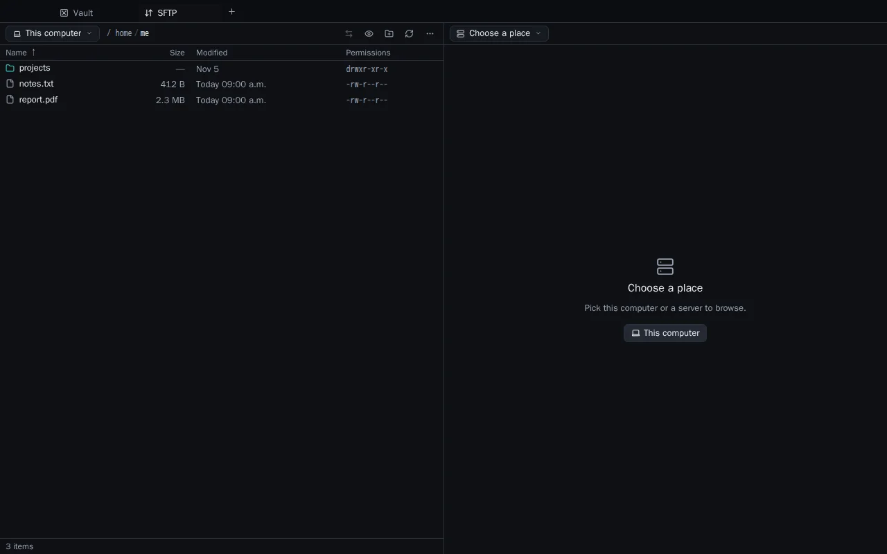
Files side by side
Drag between your computer and a server. Edit a remote file in your own editor and Dalan uploads it when you save.
Dalan keeps hosts, keys, tunnels and files in one calm desktop app. Everything is encrypted on your computer. No account, no cloud.
Dalan is a desktop app. Open this page on your computer, or send yourself the link.
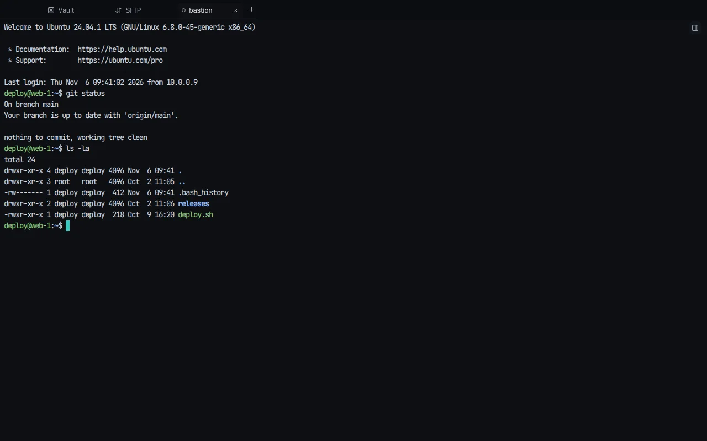
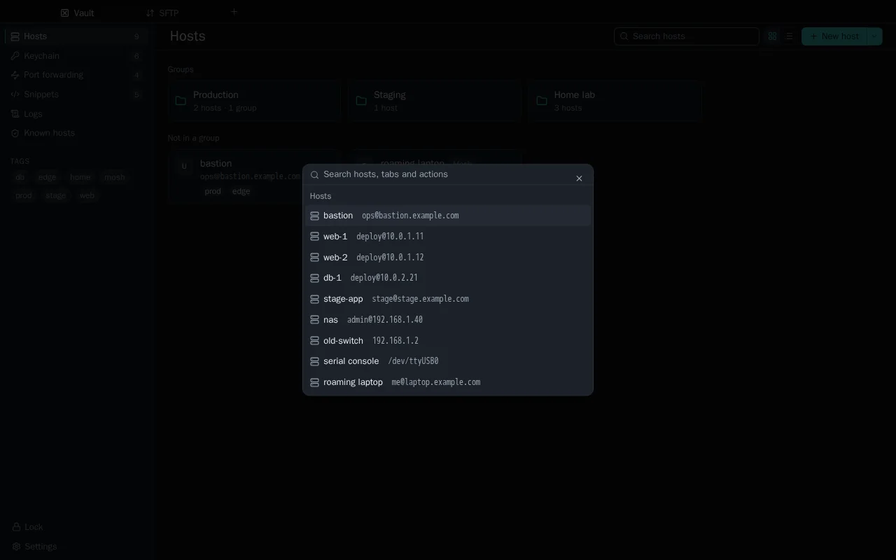
Everything you reach for, in one window
One search box for every server, open tab, snippet and action. Recent servers come first. In a new tab you can also type deploy@10.0.0.5 and go.
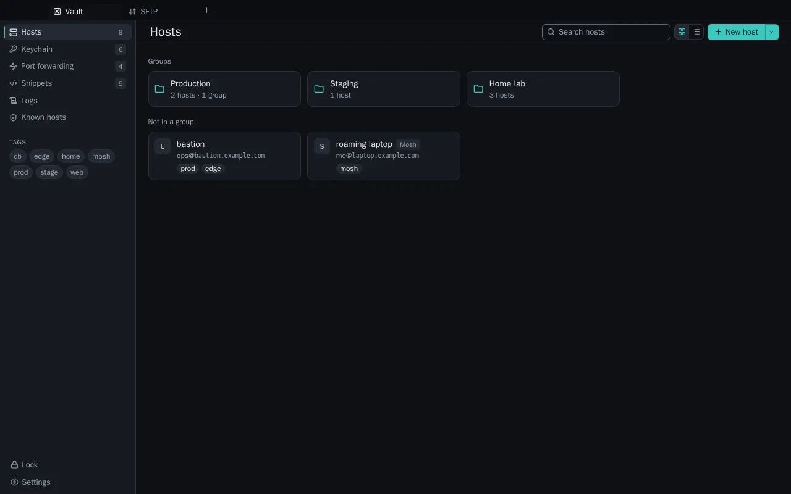
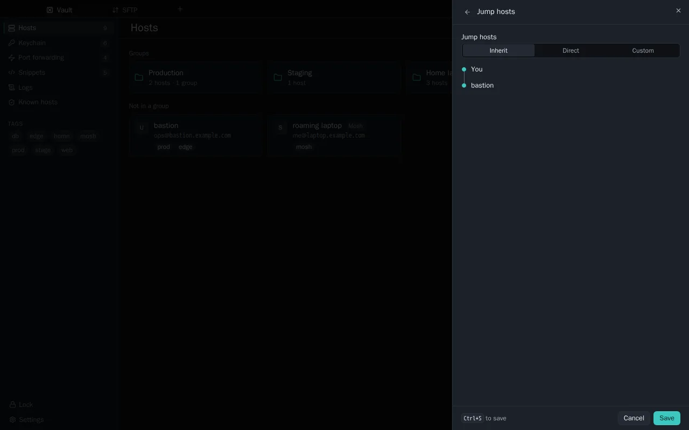
Username, key, jump host, theme and environment flow down from a group to every server inside it. Each field shows where it came from, and any server can override it.
Bring what you have: SSH config, CSV, PuTTY and MobaXterm exports.
Save the commands you type often as snippets. Run one on a whole group: Dalan opens a workspace with a pane per server and tells you which ones still need a password.
Split panes, focus mode, and broadcast typing to every live pane.
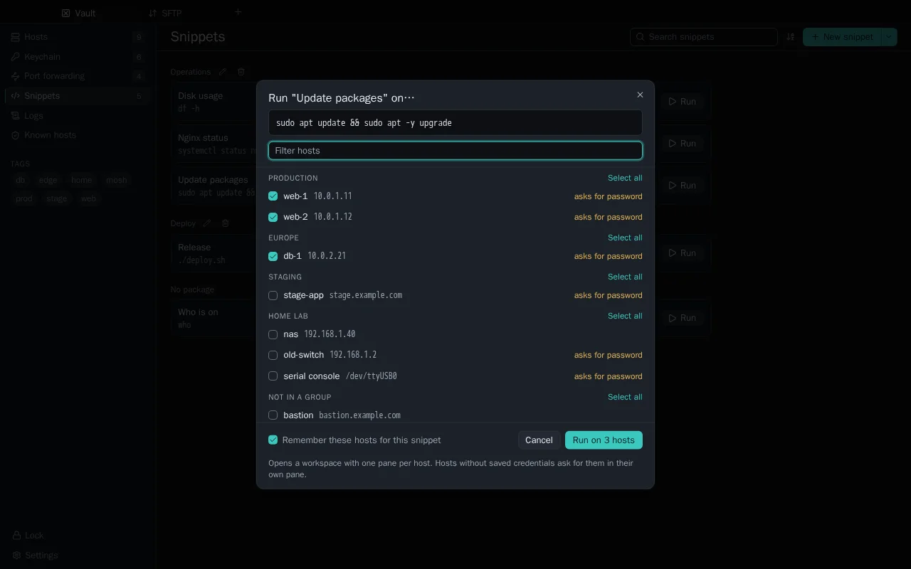
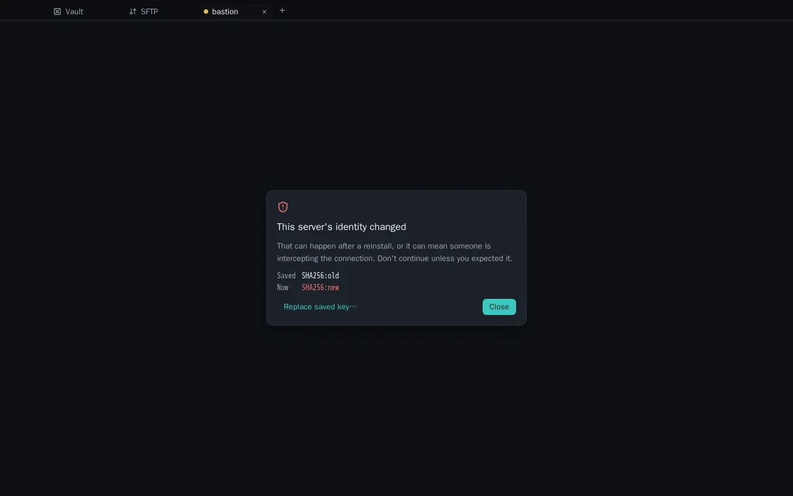

Drag between your computer and a server. Edit a remote file in your own editor and Dalan uploads it when you save.
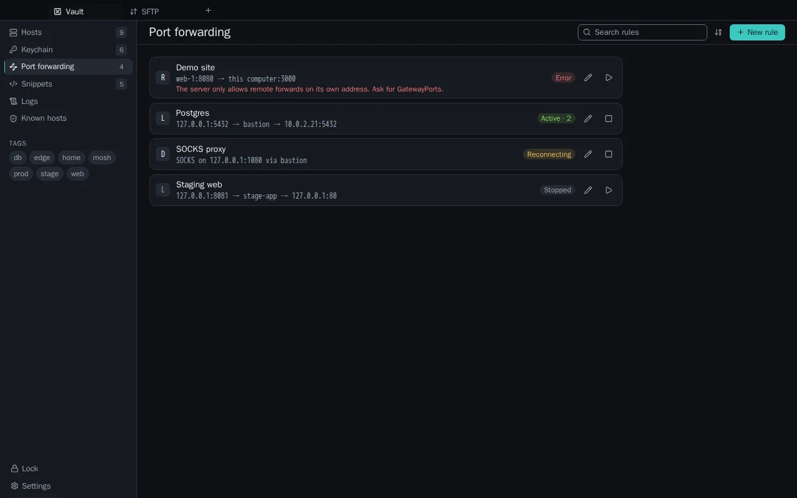
Local, remote and SOCKS forwards that reconnect by themselves after sleep or a network change.
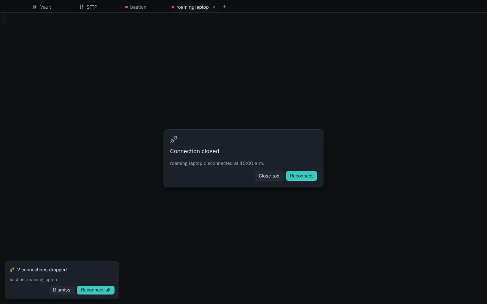
When the Wi-Fi blinks, one card lists what dropped. Reconnect all, or let Dalan retry for you.
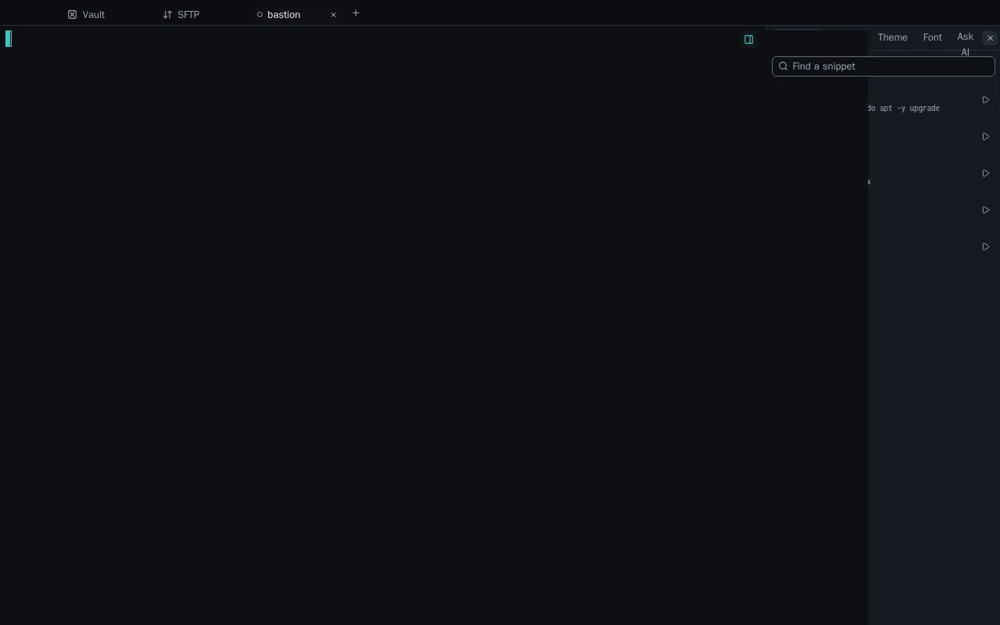
Snippets, history, themes and fonts next to the shell, plus command suggestions with your own AI key.
See the route from you to the server. Each hop asks its own questions, so you always know which machine is talking.
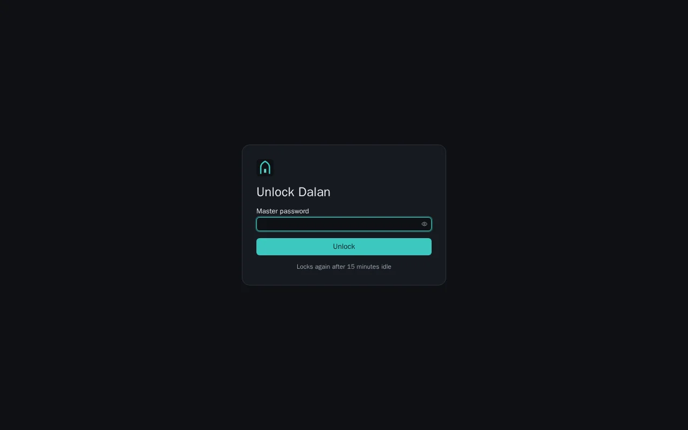
After a quiet spell Dalan locks the vault and closes sessions. One password brings it back.
Free for the team. Version 0.1.2 · Release notes
Windows 10 and 11 · x64
Download installerInstalls for you only, no administrator rights. Installing for everyone on a shared PC?
Checksums and older versions are on the releases page.
Something not covered here? Open an issue and include the version from Settings › About.
In one encrypted file on your computer, locked with your master password. They never leave it, and the window you click in never sees them.
There's no recovery; that's the point of local encryption. Set up a fresh vault and import your servers again.
Yes: your SSH config, a CSV file, or a PuTTY or MobaXterm export. Keys stay where they are until you import them yourself.
The main one installs Dalan for you, without administrator rights, and updates quietly. The all-users installer is for shared PCs and asks for administrator rights.
Not yet. Dalan keeps everything on the computer you installed it on. Sync is planned, and it will be end-to-end encrypted.
No. Dalan speaks standard SSH and SFTP. Mosh needs mosh-server on the server, as usual.
Until signing is set up, right-click Dalan in Applications, choose Open, then Open again. You only do this once. Windows may show a SmartScreen warning for the same reason: choose More info, then Run anyway.